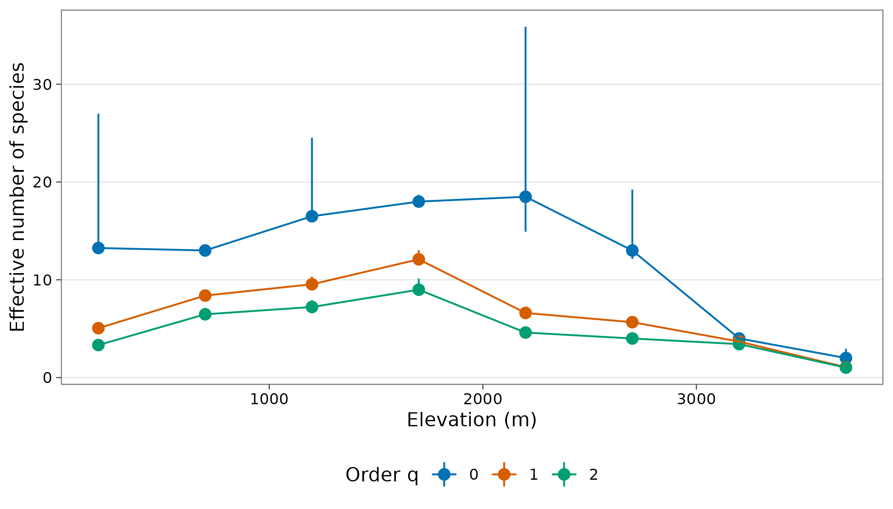
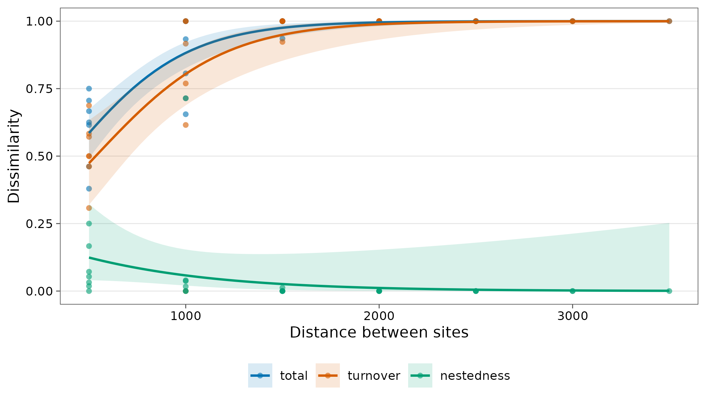

Case study: frogs along the Mt Wilhelm elevational gradient
Source:vignettes/articles/case-png-frogs.Rmd
case-png-frogs.RmdDahl et al. (2024) recorded 3390 frogs of 55 species at eight sites from 200 to 3700 m on Mt Wilhelm, Papua New Guinea.
Source and licence. Data on Dryad (doi:10.5061/dryad.3n5tb2rqf)
under CC0 1.0. See ?png_frogs and
data-raw/png_frogs.R.
library(tidydiversity)
library(dplyr)
library(ggplot2)
set.seed(2026)
png_frogs
#> # A tibble: 92 × 7
#> site elevation species scientific_name family reproduction abundance
#> <chr> <int> <chr> <chr> <chr> <chr> <int>
#> 1 MW0200 200 FR01 Cornufer papuensis Cerato… terrestrial 253
#> 2 MW0200 200 FR23 Copiula sp 1 Microh… terrestrial 29
#> 3 MW0200 200 FR28 Hylophorbus sp 7 Microh… terrestrial 68
#> 4 MW0200 200 FR30 Mantophryne lateralis Microh… terrestrial 1
#> 5 MW0200 200 FR32 Oreophryne hypsiops Microh… terrestrial 85
#> 6 MW0200 200 FR37 Xenorhina oxycephala Microh… terrestrial 8
#> 7 MW0200 200 FR40 Litoria arfakiana Pelodr… aquatic 2
#> 8 MW0200 200 FR46 Litoria mucro Pelodr… aquatic 4
#> 9 MW0200 200 FR50 Litoria thesaurensis Pelodr… aquatic 12
#> 10 MW0200 200 FR51 Papurana arfaki Ranidae aquatic 9
#> # ℹ 82 more rowsSampling completeness
div_coverage(png_frogs)
#> # A tibble: 8 × 6
#> site n s_obs f1 f2 coverage
#> <chr> <int> <int> <int> <int> <dbl>
#> 1 MW0200 508 13 1 2 0.998
#> 2 MW0700 503 13 0 0 1
#> 3 MW1200 553 16 1 1 0.998
#> 4 MW1700 449 18 0 1 1
#> 5 MW2200 591 14 3 1 0.995
#> 6 MW2700 495 12 2 0 0.996
#> 7 MW3200 177 4 0 0 1
#> 8 MW3700 114 2 1 0 1Every site has a sample coverage of at least 99.5%: the frog inventories are close to complete, so observed and estimated richness differ little.
Diversity along the gradient
est <- div_estimate(png_frogs, nboot = 100) |>
add_site_data(distinct(png_frogs, site, elevation))
ggplot(est, aes(elevation, estimate, colour = factor(q))) +
geom_pointrange(aes(ymin = lower, ymax = upper)) +
geom_line() +
scale_colour_tidydiversity() +
labs(
x = "Elevation (m)", y = "Effective number of species",
colour = "Order q"
) +
theme_tidydiversity()
Richness is highest between 1200 and 2200 m and drops to four species at 3200 m and two at 3700 m.
Species turnover
decay <- beta_decay(png_frogs, gradient = elevation)
autoplot(decay)
Dissimilarity rises with elevational distance and is almost entirely turnover: species replace one another up the mountain rather than dropping out of nested subsets.
Reference
Dahl, C., Richards, S. J., Basien, I., Mungkaje, A. J. and Novotny, V. (2024). Local and regional diversity of frog communities along an extensive rainforest elevation gradient in Papua New Guinea. Biotropica, 56, 90-97. doi:10.1111/btp.13283